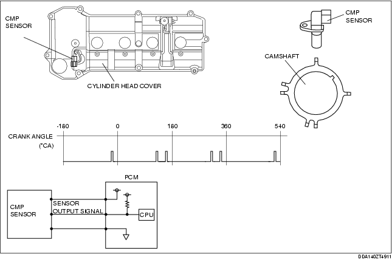

Camshaft position (CMP) sensor construction/operation [ZY]
• The CMP sensor is installed to the cylinder head cover.
• The CMP sensor detects six pulses with one rotation of the camshaft by the projections set on the intake-side camshaft.
• A GMR element has been adopted.

• The CMP sensor is composed of an integrated circuit with a built-in GMR (Giant Magneto Resistance) element and signal processing circuit, and a magnet. With the adoption of the GMR element, the signal amplitude measured against the Hall element is larger, improving signal reliability.
• Signal detection utilizes the GMR characteristic in which electrical resistance changes according to magnetic flux.
• The shape (GMR output) of the magnetic flux detected by the GMR element is changed into a rectangular wave by the signal processing circuit and input to the PCM as a sensor output signal.